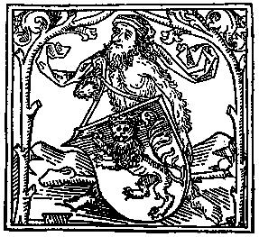
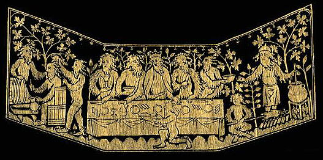

|
October 19th, 2002 Gode Cookery: James Matterer, Glenda Cockrum, Ray Walker, & Darell McCormick The Furst Course Manchet - white bread. 1 medium-sized loaf, done with the traditional medieval cross, for each diner. Botere - butter. Sallet - salad of various lettuces & herbs, raisins, oranges, lemons, cucumbers, & nuts, dressed with red wine vinegar, oil, and a little sugar, from Forme of Cury and Sallets, Humbles, & Shrewsbery Cakes. Apple Muse - a thick & creamy apple soup, from Harleian MS. 279. Potus - Hot Honey Lemonade
and Raspberry Tisane.
Entremet for the King The king was presented with
a gift from the kitchen, the Chest of
Golden Unicorns, which was later featured in the Entremectz Mouvans.
The Second Course Funges - a dish of mushrooms cooked in broth & spices, from Forme of Cury. Carrots - a simple dish of carrots preserved lightly in honey, from Le Menagier de Paris. Makerouns- a dish of home-made noodles layered with cheese & spices (medieval "macaroni-n-cheese"), from Forme of Cury. Poulés Rostis - roast hen served with 3 different dipping sauces: Cold Sage Sauce (savory), Cameline Sauce (hot & spicy mustard), & Verjuice (sweet & sour cherry sauce). From Le Viandier de Taillevent. Seed Cake - a sweet seed
cake.
Entremectz Mouvans "Olivier de la Marche describes a.... category of entertainment, which he terms Entremectz Mouvans. During a banquet, intricate scenes mounted on wheeled platforms are towed or pushed throughout the hall to the delight and wonderment of the guests." - from Le Viandier de Taillevent, Terence Scully. Une tour. A Tower. If you wish to make a tower covered with cloth painted as if it were masonry, it should have four windows at the four corners of the tower, and there should be in them the likeness of Saracens and Moors shooting at the wild man who is trying to attack them. To make the wild man you need a tall, erect, handsome man dressed in a linen robe with leggings and shoes of matching material; and the robe should be covered completely with painted hemp. In the tower you need the representation of a young lad who is disguised as the wild boy, and he should have leather balls, stuffed with flocks of wool or yarn, painted to look like stones, to throw at the wild man. - from Le Viandier de Taillevent. Our version of this spectacle featured a tower defended by three wild men (also called woodwoses). Within the tower was the King's chest, stolen by the woodwoses. On command of the King, three guards attacked the tower, and the woodwoses retaliated by throwing the mock stones described above. After defeating the wild men, the guards returned the chest to the King, who ordered its contents distributed to all those present in the hall. The feast servers then emerged and give to each diner one large, molded wafer, in the design seen HERE, and the spectacle ended. See Woodwoses HERE. Read the Presentation of the
Unicorn Wafers HERE.
The Thrid Course Stwed Beeff- boneless beef ribs baked in a faux red wine sweet & sour sauce, with currants & onions, from Harleian MS. 4016. Perys en Composte - pears cooked in faux white wine date sauce, from Harleian MS 279. Sambocade - elderflower
cheesecake flavored with rosewater, baked in individual tarts, from Forme
of Cury.
The .iiij. Course of Roial spicerye Firenze Wafers - small fleur-de-lis cakes. Spiced Fruit - orange slices
in spices.
© 2002 Gode Cookery Our modern recipe is an adaptation of the following two period receipts: (1). Salat. Take persel, sawge, grene garlec, chibolles, letys, leek, spinoches, borage, myntes, prymos, violettes, porrettes, fenel, and toun cressis, rew, rosemarye, purslarye; laue and waishe hem clene. Pike hem. Pluk hem small wiþ þyn honde, and myng hem wel with rawe oile; lay on vyneger and salt, and serue it forth. - Hieatt, Constance B. and Sharon Butler. Curye on Inglish: English Culinary Manuscripts of the Fourteenth-Century (Including the Forme of Cury). New York: for The Early English Text Society by the Oxford University Press, 1985. Gode Cookery translation: Salad. Take parsley, sage, green garlic, scallions, lettuce, leek, spinach, borage, mints, primroses, violets, "porrettes" (green onions, scallions, & young leeks), fennel, and garden cress, rue, rosemary, purslane; rinse and wash them clean. Peel them. (Remove stems, etc.) Tear them into small pieces with your hands, and mix them well with raw oil; lay on vinegar and salt, and serve. (2). To Compound an excellent Sallet, and which indeede is usuall at great Feasts, and upon Princes Tables. Take a good quantity of blaunch’t Almonds, and with your Shredding knife cut them grosly; then take as manie Raisyns of the sunne cleane washt, and the stones pick’t out, as many Figges shred like the Almonds, and as many Capers, twise so many Olives, and as many Currants as of all the rest cleane washt: a good handfull of the small tender leaves of Red Sage and Spinage; mixe all these well together with a good store of Sugar and lay them in the bottome of a great dish, then put unto them Vinegar and Oyle, and scrape more Sugar over all; then take Orenges and Lemmons, and paring away the outward pills, cut them into thinne slices, then with those slices cover the sallet all over; which done, take the thin leafe of the red Coleflowre, and with them cover the Orenges and Lemmons all over, then over those red leaves lay another course of old Olives, and the slices of wel pickld Coucumbers, together with the very inward hart of your Cabbage lettice cut into slices, then adorne the sides of the dish and the top of the Sallet with more slices of Lemons and Orenges and so serve it up. - Beebe, Ruth Anne. Sallets, Humbles, & Shrewsbery Cakes. A Collection of Elizabethan Recipes Adapted for the Modern Kitchen. Boston: David R. Godine, 1976. What we did: a salad of various lettuces & herbs, raisins, oranges, lemons, cucumbers, & nuts, dressed with red wine vinegar, oil, and a little sugar. This is the same salad which was served at the 2001 feast. Apple Muse.---Take Appelys an sethe hem, an Serge hem þorwe a Sefe in-to a potte; þanne take Almaunde Mylke & Hony, an caste þer-to, an gratid Brede, Safroun, Saunderys, & Salt a lytil, & caste all in þe potte & lete hem sethe; & loke þat þou stere it wyl, & serue it forth. - Austin, Thomas. Two Fifteenth-Century Cookery-Books. Harleian MS. 279 & Harl. MS. 4016, with extracts from Ashmole MS. 1429, Laud MS. 553, & Douce MS 55. London: for The Early English Text Society by N. Trübner & Co., 1888. Gode Cookery translation: Take apples an boil them, and pass it through a strainer into a pot; than take almond milk & honey, and add, and grated bread, saffron, sandalwood, & a little salt, & put all in a pot & let it boil; & see that you stir it well, & serve it forth. What we did: a very thick apple soup made with milk and honey, served hot. Take funges and pare hem clene, and dyce hem; take leke and shrede hym small, and do hym to seeþ in gode broth. Colour it with safroun, and do þerinne powdour fort. - Hieatt, Constance B. and Sharon Butler. Curye on Inglish: English Culinary Manuscripts of the Fourteenth-Century (Including the Forme of Cury). New York: for The Early English Text Society by the Oxford University Press, 1985. What we did: mushrooms & onions cooked in a vegetarian, kosher, beef-flavored broth with white pepper, black pepper, & cloves. You shall take as many carrots as you will, and scrape them well and cut them into pieces, and cook them like the turnips. (Carrots be red roots which be sold in the market, for a silver penny a handful.) The Menagier's instructions for turnips has them boiled until tender, then cooked in honey. - Power, Eileen. The Goodman of Paris (Le Ménagier de Paris). A Treatise on Moral and Domestic Economy by A Citizen of Paris (c. 1395). New York: Harcourt, Brace and Company, 1928 What we did: carrots cooked al dente, then preserved in a light honey sauce. Makerouns. Take and make a thynne foyle of dowh, and kerue it on pieces, and cast hym on boiling water & seeþ it wele. Take chese and grate it, and butter imelte, cast bynethen and abouven as losyns; and serue forth. - Hieatt, Constance B. and Sharon Butler. Curye on Inglish: English Culinary Manuscripts of the Fourteenth-Century (Including the Forme of Cury). New York: for The Early English Text Society by the Oxford University Press, 1985. Gode Cookery translation: Macaroni. Take and make a thin foil of dough, and carve it in pieces, and cast them in boiling water and seethe it well. Take cheese and grate it, and butter melted, cast beneath and above as for lasagna, and serve forth. What we did: home-made noodles cooked until tender, then tossed with butter, a blend of grated parmesan & romano cheeses, and sweet savory herbs (basil & thyme). NOTE: we're instructed to make this dish like losyns, or lasagna, & a recipe for losyns exists elsewhere in Forme of Cury; it is essentially our modern lasagna, without the red sauce but with sheets of noodles layered with grated cheese and powdour (spices). Following this example, we added ground herbs, sweet basil & thyme, to our recipe. Although this dish is
described as being made like lasagna, with
layers of pasta & cheese, the noodles themselves are more like our
contemporay egg noodles or macaroni and not like lasagna pasta.
Poulés rostis. They should be plucked in water, larded and roasted; they are eaten with Cold Sage Sauce or with Cameline Sauce or with verjuice. - Scully, Terence. Le Viandier de Taillevent. An Edition of all Extant Manuscripts. Ottawa: University of Ottawa Press, 1988. What we did: game hens roasted with a little olive oil, spices, & herbs, served with the three different dipping sauces: a savory made with sage, a hot & spicy made with mustard & cinnamon, & a sweet & sour made with cherries. The Sauces: (1) Cold Sage. (2) Cameline. (3) Verjuice. (1). Froide sauge. Cook your poultry in water, then set it to cool; grind ginger, cassia buds, grains of Paradise and cloves, and do not strain them; then grind bread, parsley and sage, with, if you wish, a little saffron in this greenery to make it a bright green, and sieve this; and some people add strained, hard-cooked egg yolks steeped in vinegar; do not boil. - Scully, Terence. Le Viandier de Taillevent. An Edition of all Extant Manuscripts. Ottawa: University of Ottawa Press, 1988. What we did: a dipping sauce made from chicken broth, parlsey, & sage, thickened with bread. (2). Cameline Mustard sauce. Take mustard, red wine, cinnamon powder and enough sugar, and let everything steep together. It should be thick like cinnamon. It is good for any roast. - Scully, Terence. Le Viandier de Taillevent. An Edition of all Extant Manuscripts. Ottawa: University of Ottawa Press, 1988. What we did: Dijon mustard blended with red grape juice, cinnamon, & honey. (3). Sauce of Sour Cherries or of Ordinary Cherries. Follow the directions for the Black Grape Sauce but, since the sour cherries are tart, add in all the sugar and cinnamon your master may wish. Black Grape Sauce. Get good black grapes, crush them carefully into a vessel with a crustless loaf of bread, and add in a little verjuice so the grapes will not be so sweet; boil this, but first strain it; when you have boiled it, add cinnamon, ginger and other sorts of spices. Note that this strained sauce should boil half an hour so that it is somewhat thick. - Scully, Terence. Cuoco Napoletano. The Neapolitan Recipe Collection (New York, Pierpont Morgan Library, MS Buhler, 19): A Critical Edition and English Translation. Ann Arbor: The University of Michigan Press, 2000. What we did: a sweet and sour sauce made from cherries, fruit juice, unseasoned white bread crumbs, sugar, & spices. Note: verjuice is very tart
grape juice, or unfermented wine, and
may be substituted with a variety of sour fruit juices. We used Sour
Cherry
Sauce as an alternative to actual verjuice.
This is an original recipe, based on cake receipts from A.W.'s Book of Cookrye (1591) and The English Huswife by Gervase Markham, 1615. These sources are not medieval, but this type of sweet, almost bread-like round cake was very common during the Middle Ages, and our recipe is an approximation of how this delectable may have been prepared during that earlier period. A round cake such as this is described in Chaucer's Canterbury Tales, where it is compared to the shape of the medieval round shield, the Buckler. What we did: round, home-made white cakes baked with a variety of period seeds & spices.   The wafer mold shown here is
a historical recreation of a period
wafer press from the 1600's, showing a unicorn. Each diner received one
large round wafer made from this mold and covered in edible gold.
 Stwed Beeff - Sweet and Sour Beef Ribs Stwed Beeff. ¶ Take faire Ribbes of ffresh beef, And (if thou wilt) roste hit til hit be nygh ynowe; theñ put hit in a faire possenet; caste þer-to parcely and oynons mynced, reysons of corauns, powder peper, canel, clowes, saundres, safferoñ, and salt; theñ caste there-to wyñ and a litull vynegre; sette a lyd oñ þe potte, and lete hit boile sokingly on a faire charcole til hit be ynogh; þeñ lay the fflessh, in disshes, and the sirippe there-vppoñ, And serve it forth. - Austin, Thomas. Two Fifteenth-Century Cookery-Books. Harleian MS. 279 & Harl. MS. 4016, with extracts from Ashmole MS. 1429, Laud MS. 553, & Douce MS 55. London: for The Early English Text Society by N. Trübner & Co., 1888. Gode Cookery translation: Take fair ribs of fresh beef, and (if you will) roast it til it be nearly done; then put it in a fair pot; cast thereto parsley and onions minced, raisins of Corinth, powder pepper, cinnamon, cloves, sandalwood, saffron, and salt; then cast thereto wine and a little vinegar; set a lid on the pot, and let it boil well on a fair charcoal til it be enough; then lay the flesh in dishes, and the syrup thereon, and serve forth. What we did: boneless
beef ribs prepared in a sweet &
sour sauce made of fruits, spices, & onions.
Perys en Composte. Take Wyne an Canel, & a gret dele of Whyte Sugre, an set it on þe fyre & hete it hote, but let it nowt boyle, an draw it þorwe a straynoure; þan take fayre Datys, an pyke owt þe stonys, an leche hem alle þinne, an caste þer-to; þanne take Wardonys, an pare hem and sethe hem, an leche hem alle þinne, & caste þer-to in-to þe Syryppe; þanne take a lytil Sawnderys, and caste þer-to, an sette it on þe fyre; an yif þow hast charde quynce, caste þer-to in þe boyling, an loke þat it stonde wyl with Sugre, an wyl lyid wyth Canel, an caste Salt þer-to, an let it boyle; an þan caste yt on a treen vessel, & lat it kele, and serue forth. - Austin, Thomas. Two Fifteenth-Century Cookery-Books. Harleian MS. 279 & Harl. MS. 4016, with extracts from Ashmole MS. 1429, Laud MS. 553, & Douce MS 55. London: for The Early English Text Society by N. Trübner & Co., 1888. Gode Cookery translation: Pears in Compote. Take wine and cinnamon, & a great deal of white sugar, and set it on the fire and heat it hot, but let it not boil, and draw it through a strainer; then take fair dates, and pick out the stones, and slice them all thin, and cast thereto; then take Wardens (pears), and pare them and seethe them, and slice them all thin, and cast thereto into the Syrup; then take a little sandalwood, and cast thereto, and set it on the fire; and if you have quinces, cast thereto into the boiling, and look that it stand well with sugar, and well laid with cinnamon, and cast salt thereto, and let it boil; and then cast it in a wooden vessel, & let it cool, and serve forth. What we did: pears
cooked al dente, then preserved
in a fruit & date sauce.
Sambocade. Take and make a crust in a trap & take cruddes and wryng out þe wheyze and drawe hem þurgh a straynour and put hit in þe crust. Do þerto sugar the þridde part, & somdel whyte of ayren, & shake þerin blomes of elren; & bake it vp with eurose, & messe it forth. - Hieatt, Constance B. and Sharon Butler. Curye on Inglish: English Culinary Manuscripts of the Fourteenth-Century (Including the Forme of Cury). New York: for The Early English Text Society by the Oxford University Press, 1985. Gode Cookery translation: Elderflower Cheesecake. Take and make a crust in a pie pan & take curds and wring out the whey and pass it through a strainer and put it in the pie shell. Do thereto sugar the third part (a "þridde part" - about 1/3 cup), and a portion of egg whites, and shake therein blooms of elder (dried elderflowers); and bake it up with rosewater, and serve it forth. What we did: pastry
shells filled with a blend of sweetened
soft cheeses and rosewater, then baked.
What we did: orange slices coated in sugar & spices were placed on platters, then covered with the Firenzi Wafers, small cakes shaped like fleurs-de-lis.
The Receipts The medieval receipts used in the preparation of this feast came from the following sources: Thomas Austin. Two Fifteenth-Century Cookery-Books. Harleian MS. 279 & Harl. MS. 4016, with extracts from Ashmole MS. 1429, Laud MS. 553, & Douce MS 55. London: for The Early English Text Society by N. Trübner & Co., 1888. Ruth Anne Beebe. Sallets, Humbles, & Shrewsbery Cakes. A Collection of Elizabethan Recipes Adapted for the Modern Kitchen. Boston: David R. Godine, 1976. Constance B. Hieatt. and Sharon Butler. Curye on Inglish: English Culinary Manuscripts of the Fourteenth-Century (Including the Forme of Cury). New York: for The Early English Text Society by the Oxford University Press, 1985. Eileen Power. The Goodman of Paris (Le Ménagier de Paris). A Treatise on Moral and Domestic Economy by A Citizen of Paris (c. 1395). New York: Harcourt, Brace and Company, 1928. Terrrence Scully. Le Viandier de Taillevent. An Edition of all Extant Manuscripts. Ottawa: University of Ottawa Press, 1988. |

BACK TO: Alabama Renaissance Faire
A Boke of Gode Cookery Alabama
Renaissance Faire
Alabama
Renaissance Faire
© James L. Matterer
Please visit The Gode Cookery Bookshop